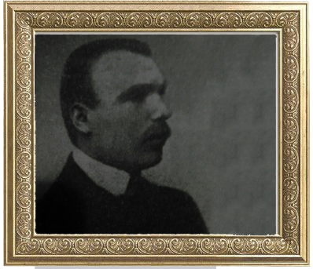

Іван Макух
1 листопада 1918 року відбувся з'їзд у Львові де проголосили про створення ЗУНР. Товмацький повіт на тих зборах представляв відомий політик, голова філіалу товариства «Просвіта», адвокат з Товмача міністр внутрішніх справ ЗУНР Іван Макуха, якого було відкликано з Відня, де він перебував кілька місяців.  З жовтня 1918 року почала виходити газета «Товмацькі вісти», яке відображувало повнокровне життя повіту за часів ЗУНР на сторінках органу Державного повітового комісаріату. За перші заходи, що їх вжила повітова рада в Товмачі, помітно поліпшила життя селян та міщан. Для них 7 грудні 1918 року харчовий уряд відкрив у Товмачі «Складницю» - крамницю, де почали торгувати нафтою, сірниками, сіллю, іншими товарами першої необхідності. 10-11 грудня 1918 року товмацький Комісаріат вирішує обрати Селянську Раду, або «свій сойм», котрий би, як відзначалося у розпоряді Івана Макуха, «турбувався, аби земля не на папері, а на ділі перейшла від панів до селян, …постачанням всякого збіжжя на посів, а також організацією кооперативних товариств, …апровізаційними справами». Обранці грамад, як повідомляла газета «Товмацькі вісти», вирішили обміняти частину збіжжя на нафту в Угорщині та Надніпрянській Україні, три вагони зерна віддали для найбідніших, щоб вони могли весною засіяти свої поля, узяти під нагляд олійниці та ін. Уже до середини березня 1919 року на Товмаччині більшість тих, які хотіли мати землю, її отримали. Рільні комісії подбали про наміння ярих основних площ.